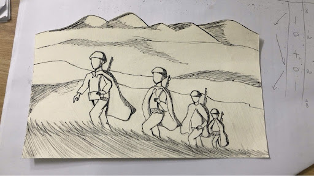

12A06
Tổ 3
Dự Án Sáng Tạo: Chạm Tây Tiến
Từ chất thơ hào hùng đến góc nhìn Kỷ nguyên số
Từ chất thơ hào hùng đến góc nhìn Kỷ nguyên số
Bạn đã bao giờ tự hỏi điều gì khiến “Tây Tiến” vẹn nguyên sức hút qua bao thế hệ? Hãy cùng mở trang tập san này để tìm lời giải đáp và tua ngược dòng thời gian về với núi rừng miền Tây hùng vĩ!
| STT & Họ và Tên thành viên | Nhiệm vụ được phân công |
|---|---|
| 1. Nguyễn Ngọc Tường Vy - 34 | Nhóm Trưởng, thiết kế bìa, tổng hợp nội dung |
| 2. Bùi Ngọc Phương Vy - 33 | Trạm 3(Thơ), trang trí |
| 3. Lê Tấn Lộc - 16 | Trạm 2, nhạc, web |
| 4. Lê Nhã Trân - 31 | Vẽ, trang trí, thiết kế |
| 5. Nguyễn Lê Nhã Uyên - 32 | Trạm 2, trang trí |
| 6. Nguyễn Ngọc Gia Mẫn - 17 | Trạm 2, trang trí |
| 7. Lý Vĩnh Khang - 13 | Trạm 1, trạm 2 |
| 8. Nguyễn Hoàng Gia - 08 | Trạm 1, Trạm 2, thiết kế |
Bấm vào từng trạm để khám phá chi tiết nội dung tập san
Bạn đã bao giờ tự hỏi điều gì khiến “Tây Tiến” vẹn nguyên sức hút qua bao thế hệ chưa? Hãy cùng mở trang đầu tiên của tập san này để tìm lời giải đáp và cùng nhau tua ngược dòng thời gian để quay về với khung cảnh núi rừng miền Tây hùng vĩ và gặp gỡ một ngòi bút tài hoa đã kiến tạo nên kiệt tác ấy!
1. Chân dung nhà thơ Quang Dũng (1921 – 1988)
2. Hoàn cảnh sáng tác và tác phẩm Tây Tiến
Bài thơ Tây Tiến được Quang Dũng sáng tác từ những trải nghiệm và hồi ức sâu sắc về đoàn quân cùng tên, được thành lập năm 1947 với phần lớn chiến sĩ là thanh niên, trí thức trẻ Hà thành. Cuối năm 1948, khi đơn vị giải thể để thành lập các đơn vị mới, Quang Dũng chuyển sang công tác ở nơi khác. Nỗi nhớ về những tháng ngày gian nan mà ấm áp tình đồng chí, cùng vẻ đẹp hùng vĩ, thơ mộng của miền Tây Bắc, đã thôi thúc ông viết nên thi phẩm này.

Hình ảnh tư liệu: Đoàn quân Tây Tiến vượt núi rừng Tây Bắc.
Ban đầu, tác phẩm có nhan đề là "Nhớ Tây Tiến", về sau được rút gọn thành "Tây Tiến" nhằm làm nổi bật hình tượng một binh đoàn hào hùng, kiêu hãnh. Bài thơ sau đó được in trong tập Mây đầu ô (1986), trở thành một trong những trang thơ chống Pháp xuất sắc nhất của nền văn học Việt Nam hiện đại.
Trước hết, tiếng vọng miền Tây được ngân lên từ những bức tranh thiên nhiên vừa hùng vĩ, dữ dội, vừa thơ mộng, trữ tình, in đậm dấu ấn trong tâm hồn người lính Tây Tiến. Bằng nỗi nhớ tha thiết, Quang Dũng đã đưa độc giả đến với những cung đường hành quân hiểm trở và tàn khốc, nơi thiên nhiên Tây Bắc hiện lên vừa khắc nghiệt cũng vừa mang vẻ đẹp thơ mộng.
Câu thơ đã mở ra một không gian núi rừng trùng điệp, gập ghềnh, với những con dốc quanh co, cao hun hút, vừa gợi cảm giác nặng nhọc vừa gợi lên sự hùng vĩ của núi rừng Tây Bắc. Đây cũng là nơi người lính phải đối mặt với muôn vàn thử thách của địa hình và thời tiết.
Bên cạnh đó, hình ảnh thơ bỗng trở nên khoáng đạt, êm dịu, gợi cảm giác bình yên giữa núi rừng trong màn sương mờ ảo, mở ra một khoảng lặng thanh bình giữa chặng đường hành quân đầy gian khổ. Những hình ảnh giàu sức gợi như “hoa đong đưa” đã khơi mở một bức tranh thiên nhiên mềm mại, duyên dáng, mang đậm chất họa. Chính sự đan xen giữa hai sắc thái đối lập đã tạo nên vẻ đẹp riêng của miền Tây.
Không chỉ khắc họa vẻ đẹp của núi rừng Tây Bắc, Quang Dũng còn dựng lên tượng đài người lính Tây Tiến với sự hòa quyện giữa khí phách kiên cường, tâm hồn lãng mạn và lý tưởng sống cao đẹp. Vẻ đẹp ấy được thể hiện qua những câu thơ:
Dáng vẻ tiều tụy của người lính là dấu ấn chân thực của những tháng ngày chiến đấu gian khổ, khi bệnh tật và thiếu thốn bào mòn thể xác. Thế nhưng, ẩn sau vẻ ngoài khắc khổ ấy lại là khí phách hiên ngang, oai phong của những con người mang trong mình tinh thần bất khuất. Đặc biệt, đằng sau vẻ ngoài rắn rỏi là một tâm hồn trẻ trung, hào hoa, lãng mạn vẫn biết hướng về những mộng ước riêng qua “dáng kiều thơm”, nhớ về Hà Nội – là nỗi nhớ về người thương, về quê nhà hay về tương lai đất nước.
Không chỉ mang tâm hồn hào hoa, lãng mạn, người lính Tây Tiến còn hiện lên với vẻ đẹp hào hùng, bi tráng trong sự hi sinh cao cả. Những từ Hán Việt cổ kính như “biên cương”, “viễn xứ”, “chiến trường” gợi không khí thiêng liêng, trang trọng, qua đó tôn lên ý nghĩa lớn lao, đồng thời khơi dậy niềm tiếc thương và lòng thành kính nơi người đọc. Câu thơ “Chiến trường đi chẳng tiếc đời xanh” khẳng định lí tưởng sống cao đẹp cùng tinh thần sẵn sàng hiến dâng tuổi xuân cho Tổ quốc. Sự hi sinh ấy càng trở nên lớn lao hơn qua hình ảnh “Áo bào thay chiếu” phản ánh hiện thực chiến tranh khốc liệt. Cách nói giảm nhẹ “anh về đất” khiến cái chết trở nên thanh thản, nhẹ nhàng, đồng thời gợi sự bất tử của những con người đã hiến dâng cuộc đời mình cho đất nước.
Làm nên sức hấp dẫn của Tây Tiến trước hết là sự kết hợp nhuần nhuyễn giữa bút pháp lãng mạn và hiện thực, giúp Quang Dũng tái hiện chân thực những gian khổ của chiến tranh, đồng thời khám phá vẻ đẹp phi thường ẩn sâu trong tâm hồn người lính. Hệ thống từ láy như “khúc khuỷu”, “thăm thẳm”, “heo hút”, “chơi vơi” không chỉ gợi địa hình hiểm trở mà còn là nỗi nhớ mênh mang của cái tôi trữ tình. Sự chuyển đổi linh hoạt trong nhịp thơ đã tạo nên những cung bậc cảm xúc phong phú, kết hợp giữa ngôn ngữ tạo hình, chất nhạc và chất họa đặc trưng trong phong cách thơ Quang Dũng.
Góc sáng tạo hội họa - âm nhạc - thơ ca của tập thể Nhóm

BÀI THƠ CẢM THỤ
— Sáng tác bởi tập thể Nhóm —
Lắng nghe giai điệu phối khí tái hiện không gian hào hùng và hoài niệm
“Hỗ trợ viết lời và phổ nhạc bởi AI”
Kết nối lý tưởng cống hiến của người lính Tây Tiến năm xưa với bản lĩnh, trách nhiệm của thế hệ trẻ hôm nay trong kỷ nguyên số.
Chủ đề: Nối dài lý tưởng cống hiến Tây Tiến – Bồi đắp bản lĩnh và trách nhiệm tuổi trẻ kỷ nguyên số
Hoàng Nam (CLB Truyền thông): Xin chào thầy cô và các bạn! Đến với diễn đàn “Tiếp lửa khát vọng”, chúng ta cùng bàn về một chủ đề rất ý nghĩa: Thế hệ trẻ ngày nay có thể tiếp nối lý tưởng cống hiến của người lính Tây Tiến năm xưa như thế nào trong kỷ nguyên số? Xin mời chia sẻ từ đại diện các câu lạc bộ!
Minh Anh (CLB Văn học): Với mình, hình ảnh người lính Tây Tiến “Chiến trường đi chẳng tiếc đời xanh” là biểu tượng đẹp nhất cho sự dấn thân. Dù không còn chiến tranh, tuổi trẻ hôm nay vẫn nối dài lý tưởng ấy bằng việc sống có mục đích, học tập nghiêm túc và sẵn sàng cống hiến cho cộng đồng.
Lan Chi (CLB Lịch sử): Đồng ý với Minh Anh! Nhưng cống hiến hôm nay không dừng ở cảm xúc mà cần hành động cụ thể. Như CLB Lịch sử tụi mình đang số hóa tư liệu, làm sách ảnh điện tử để đưa lịch sử Tây Tiến và tri ân cha ông đến gần hơn với giới trẻ trên mạng xã hội.
Quốc Bảo (CLB Công nghệ trẻ): Ý kiến của Lan Chi rất hay! Thách thức thời nay là làm chủ tri thức và công nghệ. Minh chứng rõ nhất là kỹ sư trẻ Hoàng Khắc Hiếu (sinh năm 1996, Trưởng phòng Phát triển 2 tại Viettel, Gương mặt trẻ Việt Nam tiêu biểu 2024). Trong 6 năm làm việc, anh đã ghi dấu ấn quốc tế với dự án TrafficID – hệ thống xử lý vi phạm giao thông thông minh tại Peru. Nếu thế hệ Tây Tiến cầm súng giữ nước, thì người trẻ hôm nay dùng trí tuệ công nghệ để nâng tầm vị thế Việt Nam trên toàn cầu!
Minh Anh (CLB Văn học): Nghe Bảo chia sẻ mình thấy rất tự hào! Song song với tài năng, tuổi trẻ cũng cần bản lĩnh trên không gian mạng: biết chọn lọc thông tin, ứng xử văn minh và lan tỏa năng lượng tích cực mỗi ngày.
Hoàng Nam (CLB Truyền thông): Cảm ơn những chia sẻ tuyệt vời của các bạn! Từ tinh thần Tây Tiến năm xưa, tuổi trẻ hôm nay hiểu rằng: Khát vọng phải đi đôi với bản lĩnh và trách nhiệm. Hãy cùng làm chủ công nghệ, rèn luyện tri thức để viết tiếp trang sử cống hiến của thế hệ mình!